Xcode 셋업 가이드
First Steps
- OSX 앱스토어에서 Xcode를 설치합니다.
- Xcode's command line tools을 설치합니다.
command line tools를 인스톨하려면, 우선 Xcode설치를 마친 뒤 터미널(응용프로그램/유틸리티/터미널.app 에서 찾을 수 있습니다)을 연 다음, 아래 명령어를 입력하고 엔터를 칩니다:
xcode-select --install
위 명령어를 입력하면 command line tools를 입력하는 창이 뜰것입니다. "설치"버튼을 눌러 설치를 진행합니다.
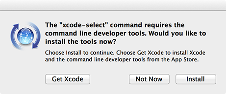
업데이트 서버오류 에러가 발생해도 걱정마세요! 이미 설치된 이전 버전이 있을경우 그렇습니다. 그럴경우 이미 설치된 것이므로 문제 없습니다!

셋업 테스트 하기
여기서, OF 앱을 빌드하고 실행할것입니다! 오픈프레임웍스에 포함된 예제중의 하나를 열어 테스트를 해보도록 하죠.
우선, 여러분의 컴퓨터안의 편리한 곳에 저희 웹사이트에서 다운받은 압축파일을 받아 압축을 풀어둡니다. 이 폴더는 오픈프레임웍스의 최상위 폴더(OF_ROOT로 알려집니다)가 될 것입니다. 아래에 나열된 것들은 오픈프레임웍스의 최상위 폴더에 위치한 주요 서브폴더들입니다 :
- apps 폴더는 여러분의 앱들이 위치할 곳이며, 여기에서 작업하게 될것입니다.
- examples 폴더에는 비디오, 3D 그래픽, 사운드, 폰트 등등 특정 컨셉의 데모를 위한 미리 제작된 앱들이 담겨있습니다.
- addons 폴더는 오픈프레임웍스 애드온(community contributed extensions to the openFrameworks core)을 담아주는 곳입니다.
- projectGenerator_osx폴더에는 프로젝트 생성기가 들어있습니다. 오픈프레임웍스의 새 앱을 생성할때 유용합니다.
3DPrimitivesExample로 테스트를 해봅시다. examples폴더를 열고, 그안의 3d폴더에 들어가보면 3DPrimitivesExample폴더가 보입니다. 내부에 2개의 폴더와 몇몇의 파일들을 볼 수 있을것입니다.
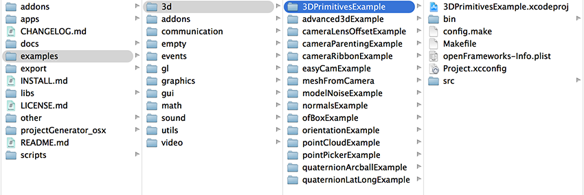
아래는 오픈프레임웍스 앱의의 기본 구조입니다:
- src 폳더는 일반적으로 앱의 소스파일들이 담길 곳입니다.
- bin 폴더는 컴파일되어 실행이 가능한 앱이 담기는 곳입니다. 이 폴더안의 data폴더는 이미지나 사운드파일과 같이 앱에서 불러올 외부파일들을 담아두는 곳입니다.
.xcodeproj확장자를 갖는 파일은 Xcode에서 열 수 있는 파일입니다. 열어보면, 아래 이미지와 비슷한 화면을 볼 수 있습니다. 아래 이미지에서 볼 수 있는것과 같이 프로젝트 내부의 좌측바를 확장하여 ofApp.cpp파일등 여러분이 열어보고싶은 파일을 선택하여 열어볼 수 있습니다.
이 문서가 작성된 시점에서는 Xcode 6버전이므로, 아마도 여러분이 미래에서 오셨다면 조금 다를수 있습니다.
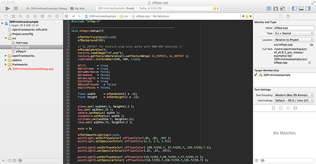
프로젝트 브라우저의 좌측 사이드바에서 상단의 폴더아이콘을 탭을 클릭하여, 프로젝트의 파일들을 볼 수 있습니다. 이 사이드바에서는 앱을 빌드(삼각형 화살표 아이콘 클릭)할때 발생한 에러들도 표시됩니다. 해상도가 낮은 장치에서 작업시 편리한 팁입니다 : cmd-0을 눌러 사이드바를 감추거나 표시할 수 있습니다. cmd-1, cmd-2 등등으로 다른 탭을 보여줄 수 있습니다.
중앙의 섹션이 메인 편집기입니다. 프로젝트 브라우저에서 선택한 파일을 편집할 수 있습니다. .cpp나 .h와 같은 소스파일을 위한 텍스트 에디터로 사용되는것이 보통이지만, 프로젝트파일의 상단에 위치한 프로젝트 세팅을 클릭해 변경하거나, 이미지/비디오/사운드파일들을 확인할 수도 있습니다/
우측은 보조사이드바로써, 오픈프레임웍스에서는 거의 필요가 없습니다. cmd-option-0 단축키 또는 우측상단의 파란 아이콘을 클릭해 숨길 수 있습니다. 상단은 툴바로써, 커다란 "실행"버튼(작성된 시점에서는 커다란 재생버튼처럼 보이네요)과 함께 프로젝트 빌드 시 어떤 프로젝트를 실행하도록 할 것인지 Xcode에게 알려주는 다이얼로그(Xcode에서는 "scheme"이라 불립니다)가 있습니다.
기본적으로 잘못된 scheme이 선택되어있습니다.. Xcode는 여러분의 앱 대신 "openFrameworks를 선택하는 경향이 있습니다. "openFrameworks"를 클릭해 드롭다운에서 여러분의 앱 이름을 선택합니다. 앱을 실행했으나 아무 변화가 없다면, 대부분의 이유는 바로 이것입니다.
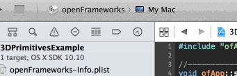
올바른 scheme을 선택했다면, 준비가 다 된것입니다! 좌측 상단의 실행버튼을 클릭(혹은 cmd-r)하여 예제를 빌드하고 실행합니다.
처음으로 오픈프레임웍스 프로젝트를 컴파일할때에는, 거의 1분정도가 걸리는데 이는 오픈프레임웍스를 컴파일 하기 때문입니다. 추후 오픈프레임웍스를 업데이트하거나 오픈프레임웍스 내부파일들을 편집하지 않는다면 이 과정은 한번만 필요합니다. 오픈프레임웍스 자체의 컴파일이 끝나면, Xcode는 예제파일을 컴파일 할것이고, "Build Succeeded" 메시지와 함께 예제 앱이 실행될 것입니다..
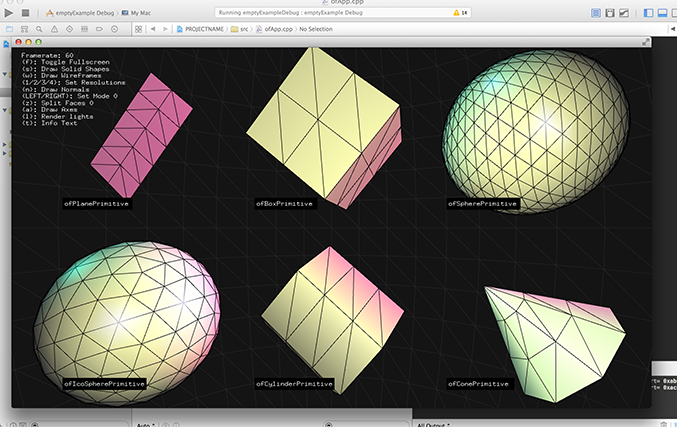
실행된 예제 앱의 창을 닫으면, 새로운 패널이 Xcode의 하단에 추가되어있음을 알 수 있습니다. 이것은 ofLog메세지가 출력되거나 디버깅을 위해 사용되는 콘솔 패널입니다. cmd-shift-y 단축키로 이 패널을 감추거나 표시할 수 있습니다.
불행이도 오픈프레임웍스가 컴파일될때 일반적으로 몇몇 경고들이 출력될것입니다만, 이는 완벽히 정상입니다.
새로운 프로젝트 생성하기
자 이제 셋업이 잘 되었는지 확인되었습니다. 이제부턴 새 프로젝트로 시작해볼 단계입니다. projectGenerator_osx폴더에 들어가보면, 오픈프레임웍스의 앱을 쉽게 생성해주는 projectGenerator.app을 찾을 수 있습니다. firstSketch라는 이름으로 새 스케치를 설정하고, 기본세팅으로 둔뒤 generate버튼을 눌러봅시다.
이후, 프로젝트 생성기를 닫고, apps/myApps/firstSketch 폴더로 이동합니다. firstSketch.xcodeproj를 Xcode로 열어, 좌측의 프로젝트 탭에서 src폴더 안의 ofApp.cpp파일을 선택합니다.
자 이제 빈 setup(), update(), darw()함수들과 몇몇 빈 함수들이 작성된 기본 앱의 텝플릿을 볼 수 있습니다.
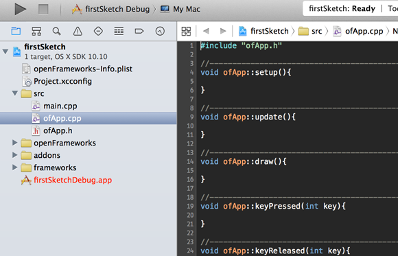
Let's make a simple app which draws some text in the top left corner of the window. In the draw() function, add the following code then hit cmd-r (or click the run button) to run your new app:
창의 좌측 상단에 텍스트를 그리는 간단한 앱을 만들어봅시다. draw()함수 안에 아래와 같은 코드를 작성하고 cmd-r을 눌러(혹은 실행버튼을 클릭하여) 여러분의 새 앱을 실행해봅시다.
ofDrawBitmapStringHighlight("Everything works!", 20, 20);
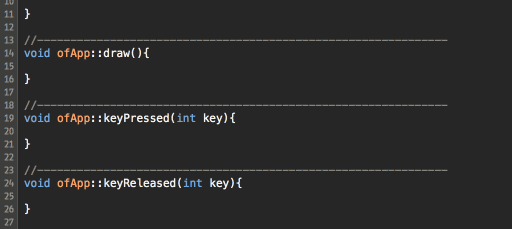
코드를 타이핑할 때마다 , Xcode에서 제안하는 자동완성을 볼 수 있습니다. up또는 down 화살표키를 이용하여 변경한 뒤, 엔터키를 눌러 선택할 수 있습니다. 또한 각 매개변수들을 바로바로 편집할 수 있습니다.(두개의 20rhk "Everything works!"메시지)
혹 자동완성을 볼 수 없다면, Xcode의 속도를 높이기 위해 빠른 빌드를 해줘야 합니다. cmd-b를 사용하여 앱의 실행 없이 빌드를 해봅시다.
에러와 디버깅
Inevitably you will run into errors. There are two major kinds, compilation errors and runtime errors. Compilation errors are usually ones caused by typos or bad build settings, and they keep your app from being compiled at all. Runtime errors are errors you get after the app has launched and have scary all-caps names like EXC_BAD_ACCESS and SIGSEGV.
Compilation errors caused by typos can usually be traced down to a specific line, or a specific character if you're lucky. Xcode will highlight the line red and give you a little triangle under the character it thinks is the issue. In the following example, there are too many "+" characters in the for loop.
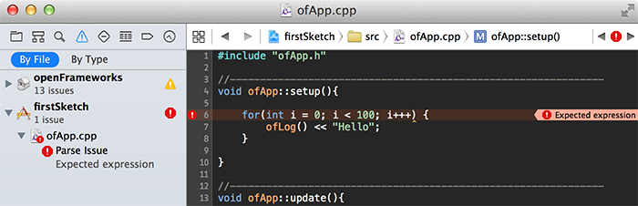
Xcode will also attempt to trace runtime errors down to a specific line, but this is a bit more finicky. It's often correct, but if you find Xcode pointing to some file you never wrote, it may just be confused. In the following example, Xcode is correctly identifying the line is causing the app to crash (trying to use a bad pointer).
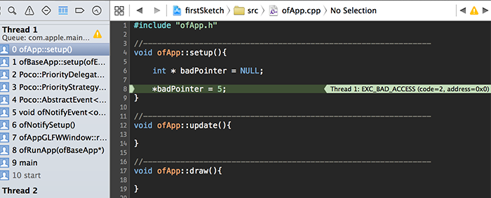
If the line Xcode is pointing to doesn't seem to be the actual problem, try selecting different stack frames in the sidebar on the left (the numbered list of items).
Runtime errors are usually caused by variables that get into a state you didn't expect (like an int getting bigger than you thought it would, or a pointer going NULL when you didn't think that would be possible). Xcode includes a pretty handy debugger that can be useful for stopping your app from running on certain lines, so you can poke around and see what all the variables are at that point in time.
You can set a breakpoint on any line you want by clicking on the little gutter that runs along the left side of the text editor. It will be represented by a blue arrow, and you can remove it by dragging it off the gutter.
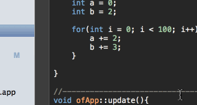
Whenever your app hits a breakpoint, it'll pause and show you the current state of all of the variables in the debugging pane at the bottom of the Xcode window. In this screenshot, you can see the final values of the a and b variables after the for loop has finished.
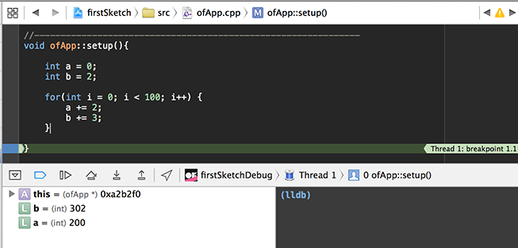
One more use for breakpoints is that they can be set to only trigger under certain conditions. In the following gif, the breakpoint is set to trigger once a is equal to 50.
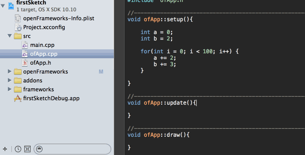
Fun fact: instead of having Xcode pause your app when a breakpoint gets hit, you can have it just play a sound instead.
Adding Files to Your Project (Addons, etc)
As your project grows, you'll probably want to start adding new files. These files might be ones written specifically for your project, or they could be addons or external libraries other people have written.
Making new files can be done in a few ways. One is to right click your "src" folder in Xcode, and select "New File..", the other is to go to the menu and select File > New > File...
In the dialog that pops up, navigate to OS X > Source and then select C++ file. Xcode will create a .cpp and .h pair for you automatically, so just give it a base name ("myNewClass") and let it do the rest. Make sure you tell Xcode to place the new files in your "src" folder when prompted.
Adding openFrameworks addons can be a bit complex, but there are some relatively foolproof ways of approaching it. If an addon comes with a README, this will typically have instructions for you regarding how to add the addon to your project. If not, a good approach is to:
- Put the addon in the addons folder in your openFrameworks root folder
- Right click the addons folder in your project in Xcode
- Select "Add file to (name of your project)..."
- Navigate to the folder where your addon is, and then into the addon itself
- Select the src folder, and the libs folder (not all addons will have a libs folder)
- Use the settings shown in the screenshot below ("create groups" and check all the target boxes, copying is up to you but is not necessary)
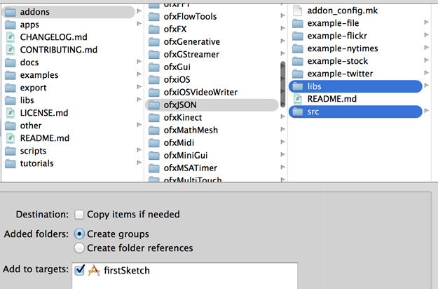
- Click "Add"
- Select the folders you just added in your Xcode project, right click and "New Group from Selection"
- Rename the new group to whatever the addon's name is
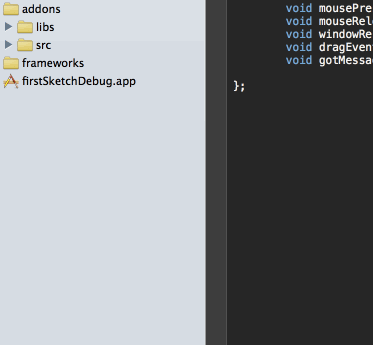
At this point, you should try to build your project. If it succeeds, hooray you're done! If you get errors about "file not found", you'll probably need to add some of the addon's folders to your header search path. These folders are almost always called "include", so look for them in the project's src and libs folders.
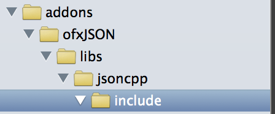
Once you know this path, open up your project's build settings by selecting the project file in the left sidebar in Xcode, selecting the "Build Settings" tab at the top and searching for "header search paths".
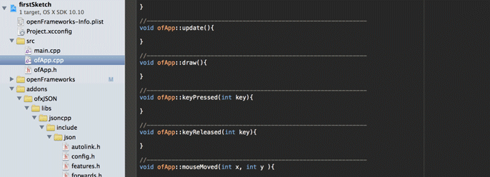
Once you've found the appropriate build setting, double click it to edit, click the + button to add a new path and enter the path to the addon's "include" folder. In these settings, $(OF_PATH) will become the path to the openFrameworks root folder, so you don't need to worry about that part.
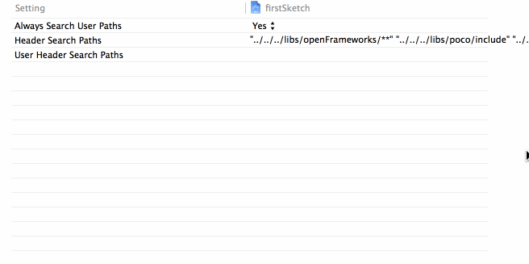
You may have to repeat this process if an addon or library has several include folders to add.